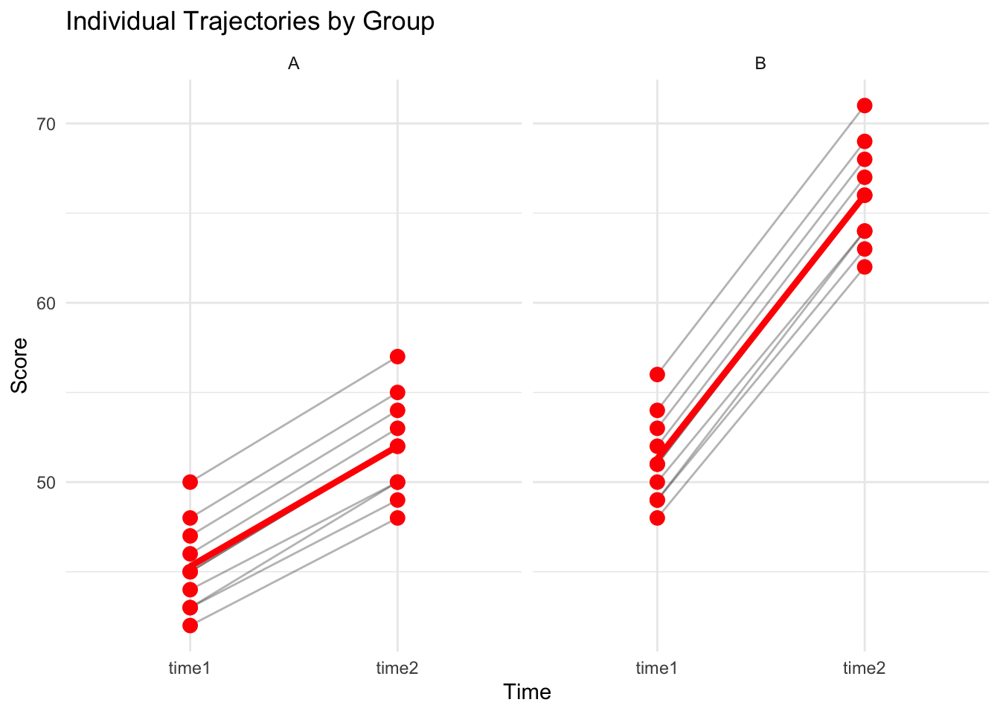

library(tidyverse)
library(afex)
library(emmeans)
library(effectsize)Boil in the Bag: Mixed ANOVA
One between-subjects factor + one within-subjects factor
Overview
Use this template when: You have groups of different participants (between-subjects) measured at multiple time points (within-subjects).
Example scenarios: - Treatment vs Control groups, measured Pre and Post - Male vs Female, tested under 3 conditions - Young vs Old, with repeated trials
Step 1: Setup
Step 2: Load Your Data
Data should be in wide format with separate columns for each time point.
# CHANGE THIS: Replace with your data file
data <- read_csv("data/mixed_anova_data.csv")
glimpse(data)Rows: 20
Columns: 6
$ id <dbl> 1, 2, 3, 4, 5, 6, 7, 8, 9, 10, 11, 12, 13, 14, 15, 16, 17, 18, …
$ age <dbl> 21, 22, 20, 23, 21, 22, 20, 24, 21, 22, 21, 22, 20, 23, 21, 22,…
$ gender <dbl> 1, 2, 1, 2, 1, 2, 1, 2, 1, 2, 1, 2, 1, 2, 1, 2, 1, 2, 1, 2
$ group <chr> "A", "A", "A", "A", "A", "A", "A", "A", "A", "A", "B", "B", "B"…
$ time1 <dbl> 42, 45, 44, 47, 43, 46, 48, 45, 43, 50, 48, 51, 50, 53, 49, 52,…
$ time2 <dbl> 48, 52, 50, 54, 49, 53, 55, 52, 50, 57, 62, 66, 64, 68, 63, 67,…Step 3: Define Your Variables
# CHANGE THESE to your variable names
id_var <- "id"
between_var <- "group" # Between-subjects factor
time_vars <- c("time1", "time2") # Within-subjects columns
# Convert between-subjects to factor
data <- data |>
mutate(across(all_of(between_var), as.factor))
cat("Between-subjects levels:", levels(data[[between_var]]), "\n")Between-subjects levels: A B cat("Within-subjects levels:", time_vars, "\n")Within-subjects levels: time1 time2 Step 4: Reshape to Long Format
data_long <- data |>
pivot_longer(
cols = all_of(time_vars),
names_to = "time",
values_to = "score"
) |>
mutate(
time = factor(time, levels = time_vars)
)
head(data_long)# A tibble: 6 × 6
id age gender group time score
<dbl> <dbl> <dbl> <fct> <fct> <dbl>
1 1 21 1 A time1 42
2 1 21 1 A time2 48
3 2 22 2 A time1 45
4 2 22 2 A time2 52
5 3 20 1 A time1 44
6 3 20 1 A time2 50Step 5: Descriptive Statistics
# Cell means (Group × Time)
descriptives <- data_long |>
group_by(.data[[between_var]], time) |>
summarise(
n = n(),
mean = mean(score, na.rm = TRUE),
sd = sd(score, na.rm = TRUE),
se = sd / sqrt(n),
.groups = "drop"
)
print(descriptives)# A tibble: 4 × 6
group time n mean sd se
<fct> <fct> <int> <dbl> <dbl> <dbl>
1 A time1 10 45.3 2.50 0.790
2 A time2 10 52 2.83 0.894
3 B time1 10 51.3 2.50 0.790
4 B time2 10 66 2.83 0.894# Marginal means
cat("\nMarginal means by group:\n")
Marginal means by group:data_long |>
group_by(.data[[between_var]]) |>
summarise(mean = mean(score), sd = sd(score))# A tibble: 2 × 3
group mean sd
<fct> <dbl> <dbl>
1 A 48.6 4.31
2 B 58.6 7.98cat("\nMarginal means by time:\n")
Marginal means by time:data_long |>
group_by(time) |>
summarise(mean = mean(score), sd = sd(score))# A tibble: 2 × 3
time mean sd
<fct> <dbl> <dbl>
1 time1 48.3 3.92
2 time2 59 7.69Visualise: Interaction Plot
ggplot(descriptives, aes(x = time, y = mean,
color = .data[[between_var]],
group = .data[[between_var]])) +
geom_point(size = 3) +
geom_line(linewidth = 1) +
geom_errorbar(aes(ymin = mean - se, ymax = mean + se), width = 0.1) +
labs(
x = "Time",
y = "Mean Score",
color = "Group",
title = "Group × Time Interaction"
) +
theme_minimal()
Individual Trajectories
ggplot(data_long, aes(x = time, y = score, group = .data[[id_var]])) +
geom_line(alpha = 0.3) +
geom_point(alpha = 0.3) +
stat_summary(aes(group = 1), fun = mean, geom = "line", color = "red", linewidth = 1.5) +
stat_summary(fun = mean, geom = "point", color = "red", size = 3) +
facet_wrap(as.formula(paste("~", between_var))) +
labs(x = "Time", y = "Score", title = "Individual Trajectories by Group") +
theme_minimal()
Step 6: Check Assumptions
Normality per Cell
data_long |>
group_by(.data[[between_var]], time) |>
summarise(
shapiro_p = shapiro.test(score)$p.value,
.groups = "drop"
)# A tibble: 4 × 3
group time shapiro_p
<fct> <fct> <dbl>
1 A time1 0.783
2 A time2 0.903
3 B time1 0.783
4 B time2 0.903Homogeneity of Variance per Time Point
library(car)
# At each time point
for (t in time_vars) {
cat("\nLevene's test at", t, ":\n")
test_data <- data_long |> filter(time == t)
print(leveneTest(as.formula(paste("score ~", between_var)), data = test_data))
}
Levene's test at time1 :
Levene's Test for Homogeneity of Variance (center = median)
Df F value Pr(>F)
group 1 0 1
18
Levene's test at time2 :
Levene's Test for Homogeneity of Variance (center = median)
Df F value Pr(>F)
group 1 0 1
18 Step 7: Run the Mixed ANOVA
mixed_anova <- aov_ez(
id = id_var,
dv = "score",
data = data_long,
between = between_var,
within = "time"
)
# Summary
summary(mixed_anova)
Univariate Type III Repeated-Measures ANOVA Assuming Sphericity
Sum Sq num Df Error SS den Df F value Pr(>F)
(Intercept) 115133 1 254.1 18 8155.814 < 2.2e-16 ***
group 1000 1 254.1 18 70.838 1.181e-07 ***
time 1145 1 2.1 18 9813.429 < 2.2e-16 ***
group:time 160 1 2.1 18 1371.429 < 2.2e-16 ***
---
Signif. codes: 0 '***' 0.001 '**' 0.01 '*' 0.05 '.' 0.1 ' ' 1# Nice output
nice(mixed_anova)Anova Table (Type 3 tests)
Response: score
Effect df MSE F ges p.value
1 group 1, 18 14.12 70.84 *** .796 <.001
2 time 1, 18 0.12 9813.43 *** .817 <.001
3 group:time 1, 18 0.12 1371.43 *** .384 <.001
---
Signif. codes: 0 '***' 0.001 '**' 0.01 '*' 0.05 '+' 0.1 ' ' 1Step 8: Effect Sizes
# Generalized eta-squared is in nice() output
# The ges column shows generalized eta-squared for each effectStep 9: Post-Hoc and Simple Effects
If Interaction is Significant
emm <- emmeans(mixed_anova, specs = c(between_var, "time"))
print(emm) group time emmean SE df lower.CL upper.CL
A time1 45.3 0.790 18 43.6 47.0
B time1 51.3 0.790 18 49.6 53.0
A time2 52.0 0.894 18 50.1 53.9
B time2 66.0 0.894 18 64.1 67.9
Confidence level used: 0.95 # Simple effect of time within each group
cat("\nSimple effect of time within each group:\n")
Simple effect of time within each group:pairs(emm, by = between_var)group = A:
contrast estimate SE df t.ratio p.value
time1 - time2 -6.7 0.153 18 -43.862 <0.0001
group = B:
contrast estimate SE df t.ratio p.value
time1 - time2 -14.7 0.153 18 -96.234 <0.0001# Simple effect of group at each time point
cat("\nSimple effect of group at each time point:\n")
Simple effect of group at each time point:pairs(emm, by = "time")time = time1:
contrast estimate SE df t.ratio p.value
A - B -6 1.12 18 -5.374 <0.0001
time = time2:
contrast estimate SE df t.ratio p.value
A - B -14 1.26 18 -11.068 <0.0001Main Effects (if interaction not significant)
# Main effect of group
cat("\nMain effect of group:\n")
Main effect of group:emmeans(mixed_anova, specs = between_var) |> pairs() contrast estimate SE df t.ratio p.value
A - B -10 1.19 18 -8.417 <0.0001
Results are averaged over the levels of: time # Main effect of time
cat("\nMain effect of time:\n")
Main effect of time:emmeans(mixed_anova, specs = "time") |> pairs() contrast estimate SE df t.ratio p.value
time1 - time2 -10.7 0.108 18 -99.063 <0.0001
Results are averaged over the levels of: group Step 10: Summary of Results
cat("=== MIXED ANOVA RESULTS ===\n\n")=== MIXED ANOVA RESULTS ===cat("CELL MEANS:\n")CELL MEANS:print(descriptives)# A tibble: 4 × 6
group time n mean sd se
<fct> <fct> <int> <dbl> <dbl> <dbl>
1 A time1 10 45.3 2.50 0.790
2 A time2 10 52 2.83 0.894
3 B time1 10 51.3 2.50 0.790
4 B time2 10 66 2.83 0.894cat("\nANOVA RESULTS:\n")
ANOVA RESULTS:anova_nice <- nice(mixed_anova)
print(anova_nice)Anova Table (Type 3 tests)
Response: score
Effect df MSE F ges p.value
1 group 1, 18 14.12 70.84 *** .796 <.001
2 time 1, 18 0.12 9813.43 *** .817 <.001
3 group:time 1, 18 0.12 1371.43 *** .384 <.001
---
Signif. codes: 0 '***' 0.001 '**' 0.01 '*' 0.05 '+' 0.1 ' ' 1Step 11: APA Write-Up Template
NoteAPA Format
A mixed ANOVA with [BETWEEN FACTOR] ([LEVEL 1] vs [LEVEL 2]) as the between-subjects factor and time ([TIME 1] vs [TIME 2]) as the within-subjects factor was conducted on [OUTCOME].
Main effect of [BETWEEN]: F(X, XX) = XX.XX, p = .XXX, η²G = .XX. [Describe direction if significant.]
Main effect of time: F(X, XX) = XX.XX, p = .XXX, η²G = .XX. [Describe direction if significant.]
[BETWEEN] × Time interaction: F(X, XX) = XX.XX, p = .XXX, η²G = .XX.
[If interaction significant:] Simple effects analysis revealed that [GROUP A] showed a significant change from [TIME 1] to [TIME 2], p = .XXX, while [GROUP B] [did/did not] show significant change, p = .XXX.